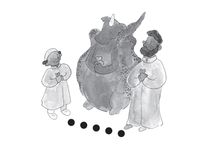
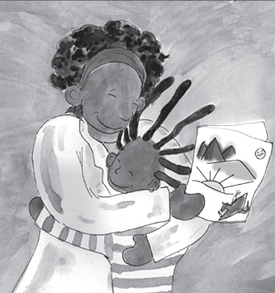

THE ARIO
INFORMATION FOR ADULTS
CHILDREN NEED TO KNOW THE FACTS ABOUT COVID-19
SHARE THE FACTS
Start your chats with children by sharing clear factual information about the coronavirus and Covid-19. Children can only learn how to protect themselves if they fully understand the virus and its risks.
Adults ask open questions to invite children to talk about what they know. As the children speak, and they recognize adults are listening, they can feel comfortable to continue to share their ideas, thoughts and feelings.
HOW FAR IS FAR ENOUGH?
Different country health systems recommend 1-2 meters for “social” or “physical” distancing. Please check what is recommended in your country and use this with the children.
To be sure children understand how big is the distance you can pace the distance or use a ruler, a piece of string or have the children lie on the floor to measure 1 or 2 meters.

16
WORLD FAMOUS SCIENTISTS STILL LEARNING ABOUT CORONAVIRUS
We are all still learning about this new coronavirus. Scientists do not have all the answers. Adults do not have all the answers. Yet, children are asking questions and adults must do their best to answer as well as let children know we are all still learning.
If children challenge the risks to them as children, adults can respond with, “You are right. Children do not often get seriously sick from the virus. BUT, some do and there are still risks. Many people, including children, can have the virus inside them and pass it to others. Your little sister has a heart problem and if she gets the virus it can be serious because she has other health problems. And, Grandma and Grandpa need to avoid getting the virus because older people can become very sick and even die from the virus.”
Children need to be part of helping to protect people and prevent them from getting the virus. If Sara asked, “I don’t want to get anyone sick. How do I know if I have the virus inside me?” Sara’s Mum can answer, “Most often you don’t know because you feel fine. Let’s keep reading the story since it will teach us how to protect ourselves